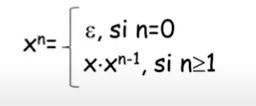

GRAMÁTICAS
¿QUE ES UN ALFABETO?
Es un conjunto finito no vacío cuyos elementos se llaman símbolos y se denotan con letras minúsculas, se utiliza la letra Σ para denotar el conjunto de símbolos.
Tenemos por ejemplo el alfabeto latino: {a,b,c,d,e,f,g,h,i,j,k,l,m,n,ñ,o,p,q,r,s,t,u,v,w,x,y,z} y con este podemos formar palabras como: abb, puma, moto, afed, ababa, las cuales son solo palabras o cadenas sin significado.
¿Que es un alfabeto binario?
Es una secuencia finita de 0 y 1.
¿QUE ES UNA CADENA?
Son secuencias ordenadas y finitas de símbolos, por ejemplo: abbb ≠ bbba
E: Denota una cadena vacía (No tiene símbolos).
¿QUE ES LA POTENCIA DE UNA CADENA?
Sea X una cadena, se define la potencia como:
Por ejemplo: (a)3.(aba)2 = aaaabaaba
¿QUE ES LA LONGITUD DE UNA CADENA?
Sea x una cadena que pertenece a un lenguaje L, su longitud se denota por |x| y se define como:
Por ejemplo: |E|= 0
|ababaa|= 6
LENGUAJE
¿QUE ES UN LENGUAJE?
Es un conjunto de palabras en particular, por ejemplo:
Lenguaje definido sobre {a,c}= {a,a}, {a,c,c}, {c,c,a }, {c,a,c}, {a,a,c,c}, {a,c,c,a}
Los lenguajes pueden ser descritos con palabras o con notación matemática.
¿QUE ES UN LENGUAJE UNIVERSAL SOBRE Σ?
Se denota como Σ* y se conoce también como cerradura, Σ* es el lenguaje formado por todas las cadenas sobre el alfabeto Σ.
Nota: Siempre se incluye E en Σ* porque la cadena vacía se puede obtener de cualquier alfabeto.
Para cualquier alfabeto Σ, se tiene que Σ* es infinito ya que Σ no puede ser vacío.
CONCATENACIÓN ENTRE LEGUAJES
Sean A y B lenguajes definidos sobre Σ, la concatenación A*B se define como:
A*B= { u*v | u ∈ A ∧ v ∈ B }
Por ejemplo: A={ a, ab, ac } B={ b, b2 }
A*B={ ab, abb, acb,ab2, abb2, acb2 } = { ab, ab2, acb, ab2, ab3, acb2 } = { ab, ab2, acb, ab3, acb2 }
POTENCIA DE UN LENGUAJE
Dado un lenguaje A sobre Σ se define la potencia como:
Un ejemplo seria: A={ ab, b }
A3 = A*A*A ={ ab, b} { ab, b } { ab, b }
={ ab, b } { ab, abb, bab, bb } = { abab, ababb, abbab, abbb, bab, babb, bbab, bbb }
CERRADURA DE KLEENE
La cerradura de Kleene o cerradura estrella de un lenguaje A es la unión de las potencias, se denota por A*
A*= A0 U A1 U A2 U .... An
A* es el conjunto de posibles concatenaciones sobre A.
Por ejemplo: A* para A={ a, ab }
A0={ E } A1={ a, ab } A2={ aa, aab, aba, abab } ... seguiría hasta An
IMPORTANTE:
- Σ* se define sobre el alfabeto y corresponde a todas las cadenas que se pueden crear sobre un alfabeto.
- A* se define sobre un lenguaje A y consiste en todas las concatenaciones posibles.
CERRADURA POSITIVA DE KLEENE A+
La cerradura positiva de Kleene de un lenguaje A es la unión de las potencias sin incluir A0={ E }
A+= A1 U A2 U A3 U ... An
CERRADURA POSITVA DE KLEENE Σ+
Es el conjunto de palabras que se pueden formar sobre Σ sin incluir la cadena vacía (E).
LENGUAJES REGULARES
¿QUE ES UN LENGUAJE REGULAR?
Dado un alfabeto Σ, los lenguajes regulares sobre tal alfabeto se definen recursivamente como:
0 Es un lenguaje regular.
{ E }: Es un lenguaje regular.
Si A y B son lenguajes regulares entonces AUB, A*B, A* son lenguajes regulares.
NOTA: Siempre que se requiera almacenamiento ilimitado para almacenar el conteo y luego compararlo con otros conteos ilimitados, se dice entonces que el lenguaje no es regular.
¿QUE ES UNA EXPRESIÓN REGULAR?
Es una forma simplificada de representar un lenguaje regular.
| Lenguaje regular | Expresión regular |
| {ab} | ab |
| {a}* | a* |
| {a}+ | a+ |
| {a} U {b} | aUb |
AUTÓMATAS FINITOS
Un autómata finito es un modelo computacional que realiza cómputos en forma automática sobre una entrada para producir una salida.
La operación de la maquina consiste en un conjunto de estados internos y la cabeza del autómata solo puede leer, no escribir, y se mueve siempre a la derecha leyendo un símbolo a la vez.
Se puede representar por medio de un grafo dirigido conocido como un diagrama de transición.
Cuenta con Nodos (Estados): Estado inicial y estado de aceptación, y Aristas (Transiciones).
Cada avance del autómata depende de: (símboloLeido, estadoActual).
FA se caracteriza en dos tipos: Autómatas finitos deterministas y autómatas finitos no deterministas.
TEOREMA DE KLEENE
Un lenguaje es regular si y solo si es aceptado por un autómata finito.
AUTÓMATA FINITO DETERMINISTA (AFD-DFA)
En un autómata finito determinista, para un carácter de entrada en particular, la máquina pasa a un solo estado. Se define una función de transición en cada estado para cada símbolo de entrada. Además, en DFA no se permite el movimiento nulo (o ε), es decir, DFA no puede cambiar de estado sin ningún carácter de entrada.
Es una colección de 5 elementos:
- Un alfabeto Σ
- Una colección finita de estados Q
- Un estado inicial q0
- Una colección finita de estados de aceptación (T)
- Una función S:QxΣ ⇒ Q que determina el único estado siguiente para el par (qi,σ) correspondiente al estado actual qi y la entrada σ.
S: Debe ser una función para que exista el determinismo.
AUTÓMATA FINITO NO DETERMINISTA (AFND-NFA)
NFA es similar a DFA excepto por las siguientes características adicionales:
1. Se permite el movimiento nulo (o ε), es decir, puede avanzar sin leer símbolos.
2. Capacidad de transmitir a cualquier número de estados para una entrada en particular.
Si se permite que desde algún estado se realicen 0 o 2 o mas transiciones mediante el mismo símbolo de entrada, se dice que el autómata finito no es determinista.
Es una colección de 5 elementos:
- Un alfabeto Σ
- Una colección finita de estados Q
- Un estado inicial q0
- Una colección finita de estados de aceptación (T)
- Una relación Δ sobre (QxΣ) ⇒ 2Q denominada relación de transición; 2Q es el conjunto potencia de Q (subconjuntos de Q).
Aquí podrás encontrar más información sobre lenguajes y gramáticas:
https://www.geeksforgeeks.org/introduction-of-finite-automata/?ref=lbp
https://www.geeksforgeeks.org/regular-expressions-regular-grammar-and-regular-languages/?ref=lbp